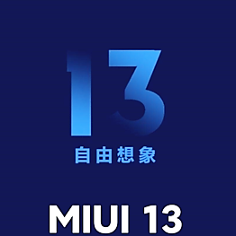

我的名字叫吉良吉影，年龄33岁（上来直接开始吟唱）
程某，13岁，初二 学习信息练习时长2年半
卤出鸡脚了吧！树枝666，小黑子苏珊，食不食油饼？耗丸吗？再黑紫砂吧！4年前的梗你们还在玩，4年前的剩饭你们怎么不吃？臻果粉！我看你们都馍蒸了！蒸梅油酥汁！你们犯法了知道吗？你们再这样我就煲胫了！香精煎鱼是吗？香翅捞饭是吗？真没有荚饺，荔枝？你要我怎么荔枝！？蒸乌鱼......葡心腩蒸虾头
鸡美
鸡你实美
鸡你美
美鸡
实在鸡太美
鸡 实在鸡美鸡 美
鸡 实在鸡太美 美
鸡 实在是鸡美 美
鸡 实在美鸡你 美
鸡 鸡你实在是美 篮球
鸡 鸡你实在美 篮球球
鸡你鸡鸡鸡 篮球
鸡你太美裆裆
鸡美裆 裆鸡
鸡美 美鸡
鸡 鸡
鸡 鸡
鸡 鸡
鸡 鸡
金猴 金猴
皮鞋 皮鞋你干嘛～～～哈哈～哎呦～～你干嘛～～～哈哈～哎呦～～你干嘛～～～哈哈～哎呦～～你干嘛～～～哈哈～哎呦～～你干嘛～～～哈哈～哎呦～～你干嘛～～～哈哈～哎呦～～你干嘛～～～哈哈～哎呦～～你干嘛～～～哈哈
也许坤坤老了之后，现在那些珍爱粉走在路上都不会搭理坤坤，但是我们在路上见到他依然会叫他一声鸡哥 巅峰产生虚伪的矗拥，黄昏见证虔诚的信徒，我们才是真正的ikun！！！致所有小黑子
学习过的语言：C/C++、Python、Html+css、markdown
不会JavaScript写不了网页交互：（
会亿点cmd命令和Linux命令
用过很多系统有PC的（Windows7，Windows10，linux Ubuntu，MacOS） 也有移动端的（IOS，IpadOS，Android）

当然也有可能成为板砖
拥有丰富的想象力和创造力 （经常整活）
经常通过实践验证想法 （想法嘛......）
遇到困难会通过查阅书籍，上网查阅资料等方式解决问题
（ctj）
擅长与人交往，和别人成为朋友
（你真可爱）
一样和我学习信息学的同学，姜某
他和我一样有丰富的想象力和创造力 （也很能整活）
最后用一句名言来收场
有的人活着，但他已经死了。有的人死了，那他就是死了————kyoukawa。
"程序和诗差不多，你先得把它写出来。"————E. W. Dijkstra
下一章见